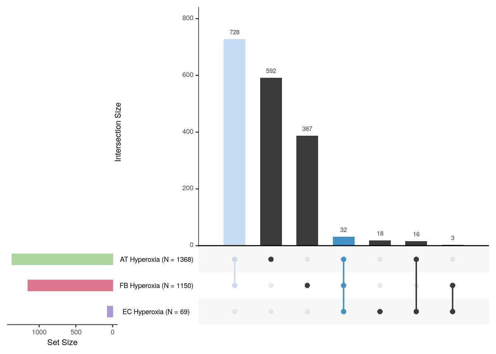
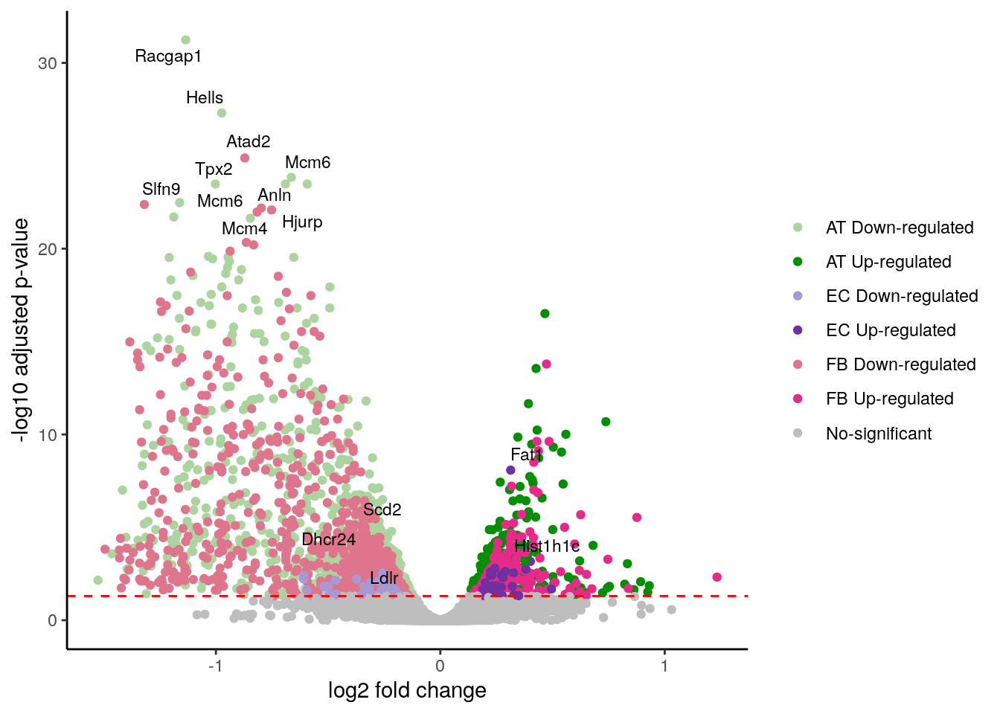

Last updated: 2025-08-28
Checks: 6 1
Knit directory: invitro/
This reproducible R Markdown analysis was created with workflowr (version 1.7.1). The Checks tab describes the reproducibility checks that were applied when the results were created. The Past versions tab lists the development history.
Great! Since the R Markdown file has been committed to the Git repository, you know the exact version of the code that produced these results.
Great job! The global environment was empty. Objects defined in the global environment can affect the analysis in your R Markdown file in unknown ways. For reproduciblity it’s best to always run the code in an empty environment.
The command set.seed(20250827) was run prior to running the code in the R Markdown file. Setting a seed ensures that any results that rely on randomness, e.g. subsampling or permutations, are reproducible.
Great job! Recording the operating system, R version, and package versions is critical for reproducibility.
Nice! There were no cached chunks for this analysis, so you can be confident that you successfully produced the results during this run.
Using absolute paths to the files within your workflowr project makes it difficult for you and others to run your code on a different machine. Change the absolute path(s) below to the suggested relative path(s) to make your code more reproducible.
| absolute | relative |
|---|---|
| /workspaces/invitro/invitro/data/ | data |
Great! You are using Git for version control. Tracking code development and connecting the code version to the results is critical for reproducibility.
The results in this page were generated with repository version 39f5039. See the Past versions tab to see a history of the changes made to the R Markdown and HTML files.
Note that you need to be careful to ensure that all relevant files for the analysis have been committed to Git prior to generating the results (you can use wflow_publish or wflow_git_commit). workflowr only checks the R Markdown file, but you know if there are other scripts or data files that it depends on. Below is the status of the Git repository when the results were generated:
Untracked files:
Untracked: code/cell_cycle.r
Untracked: code/common_genes.r
Untracked: code/deg_plots.r
Untracked: code/single_cell.r
Untracked: code/unique_genes.r
Untracked: data/220427_ATII_embedding.rds
Untracked: data/220427_EC_embedding.rds
Untracked: data/220427_MFB_embedding.rds
Untracked: data/G1S.txt
Untracked: data/G2M.txt
Untracked: data/Hyperoxia_AT.xls
Untracked: data/Hyperoxia_EC.xls
Untracked: data/Hyperoxia_MFB.xls
Untracked: data/bulk_seurat_endothelial.rds
Untracked: data/bulk_seurat_epithelial.rds
Untracked: data/bulk_seurat_stroma.rds
Untracked: data/inVivo_hyperoxia.xlsx
Untracked: et(frame,nsets = 20, nintersects = 15,
Unstaged changes:
Modified: README.md
Modified: _workflowr.yml
Modified: data/README.md
Modified: invitro.Rproj
Note that any generated files, e.g. HTML, png, CSS, etc., are not included in this status report because it is ok for generated content to have uncommitted changes.
These are the previous versions of the repository in which changes were made to the R Markdown (analysis/degs.Rmd) and HTML (docs/degs.html) files. If you’ve configured a remote Git repository (see ?wflow_git_remote), click on the hyperlinks in the table below to view the files as they were in that past version.
| File | Version | Author | Date | Message |
|---|---|---|---|---|
| Rmd | 39f5039 | jdhenaos | 2025-08-28 | workflowr::wflow_publish("analysis/*") |
| html | 5d60f00 | jdhenaos | 2025-08-27 | Build site. |
| html | bb42f18 | jdhenaos | 2025-08-27 | Build site. |
| Rmd | 31a62a2 | jdhenaos | 2025-08-27 | Add DEGs analysis |
| html | 7603db9 | jdhenaos | 2025-08-27 | Build site. |
| Rmd | d65917b | jdhenaos | 2025-08-27 | Start my new project |
library(ggplot2)
library(UpSetR)
library(ggrepel)
data.folder <- "/workspaces/invitro/invitro/data/"
raw.AT <- read.table(paste0(data.folder,"Hyperoxia_AT.xls"),sep = "\t",header = T,stringsAsFactors = F)
raw.EC <- read.table(paste0(data.folder,"Hyperoxia_EC.xls"),sep = "\t",header = T,stringsAsFactors = F)
raw.MFB <- read.table(paste0(data.folder,"Hyperoxia_MFB.xls"),sep = "\t",header = T,stringsAsFactors = F)
DEG.AT <- raw.AT[which(raw.AT$padj < 0.05),]
DEG.EC <- raw.EC[which(raw.EC$padj < 0.05),]
DEG.MFB <- raw.MFB[which(raw.MFB$padj < 0.05),]frame <- fromList(list(DEG.EC$ensembl_gene_id,
DEG.MFB$ensembl_gene_id,
DEG.AT$ensembl_gene_id))
colnames(frame) <- c(paste0("EC Hyperoxia"," (N = ",nrow(DEG.EC),")"),
paste0("FB Hyperoxia"," (N = ",nrow(DEG.MFB),")"),
paste0("AT Hyperoxia"," (N = ",nrow(DEG.AT),")"))
upset(frame,nsets = 20, nintersects = 15,
queries = list(list(query = intersects,
params = list("AT Hyperoxia (N = 1368)","FB Hyperoxia (N = 1150)"),
color = "#C6DBEF", active = T),
list(query = intersects,
params = list("AT Hyperoxia (N = 1368)","FB Hyperoxia (N = 1150)","EC Hyperoxia (N = 69)"),
color = "#4292C6", active = T)),
order.by = c("freq"),empty.intersections = NULL,
sets.bar.color = c("#A79AD4","#DF758C","#ACD49F"),
sets = colnames(frame),keep.order = TRUE)
| Version | Author | Date |
|---|---|---|
| 7603db9 | jdhenaos | 2025-08-27 |
raw.AT <- raw.AT[order(raw.AT$padj),1:8]
raw.EC <- raw.EC[order(raw.EC$padj),1:8]
raw.MFB <- raw.MFB[order(raw.MFB$padj),1:8]
raw.AT$direction <- "No-significant"
raw.EC$direction <- "No-significant"
raw.MFB$direction <- "No-significant"
raw.AT$direction[which(raw.AT$padj < 0.05 & raw.AT$log2FoldChange > 0)] <- "AT Up-regulated"
raw.EC$direction[which(raw.EC$padj < 0.05 & raw.EC$log2FoldChange > 0)] <- "EC Up-regulated"
raw.MFB$direction[which(raw.MFB$padj < 0.05 & raw.MFB$log2FoldChange > 0)] <- "FB Up-regulated"
raw.AT$direction[which(raw.AT$padj < 0.05 & raw.AT$log2FoldChange < 0)] <- "AT Down-regulated"
raw.EC$direction[which(raw.EC$padj < 0.05 & raw.EC$log2FoldChange < 0)] <- "EC Down-regulated"
raw.MFB$direction[which(raw.MFB$padj < 0.05 & raw.MFB$log2FoldChange < 0)] <- "FB Down-regulated"
raw.AT$threshold <- c(rep(TRUE,5),rep(FALSE,nrow(raw.AT) - 5))
raw.EC$threshold <- c(rep(TRUE,5),rep(FALSE,nrow(raw.EC) - 5))
raw.MFB$threshold <- c(rep(TRUE,5),rep(FALSE,nrow(raw.MFB) - 5))
all.hyperoxia <- rbind(raw.AT,raw.MFB,raw.EC)
all.hyperoxia$direction <- as.factor(all.hyperoxia$direction)
head(all.hyperoxia[order(all.hyperoxia$padj),],10) ensembl_gene_id mgi_symbol baseMean log2FoldChange lfcSE
19009 ENSMUSG00000023015 Racgap1 2126.7225 -1.1347772 0.09047989
21849 ENSMUSG00000025001 Hells 1218.9385 -0.9741433 0.08294554
188171 ENSMUSG00000022360 Atad2 2370.5353 -0.8715216 0.07697328
764 ENSMUSG00000026355 Mcm6 4053.6186 -0.6640666 0.06029915
2646 ENSMUSG00000027469 Tpx2 2590.7041 -1.0022389 0.09216284
13727 ENSMUSG00000036777 Anln 6570.4818 -0.6903815 0.06344467
14488 ENSMUSG00000032555 Topbp1 4023.1976 -0.5929167 0.05434847
13113 ENSMUSG00000037544 Dlgap5 909.1766 -1.1617465 0.10910280
160101 ENSMUSG00000069793 Slfn9 988.9436 -1.3188793 0.12277972
76910 ENSMUSG00000026355 Mcm6 3211.9482 -0.7980071 0.07483324
stat pvalue padj direction threshold
19009 -12.54176 4.410857e-36 5.775577e-32 AT Down-regulated TRUE
21849 -11.74437 7.547978e-32 4.941661e-28 AT Down-regulated TRUE
188171 -11.32239 1.016601e-29 1.309281e-25 FB Down-regulated TRUE
764 -11.01287 3.312903e-28 1.445972e-24 AT Down-regulated TRUE
2646 -10.87465 1.522340e-27 3.322254e-24 AT Down-regulated TRUE
13727 -10.88163 1.410184e-27 3.322254e-24 AT Down-regulated TRUE
14488 -10.90954 1.037828e-27 3.322254e-24 AT Down-regulated FALSE
13113 -10.64818 1.778033e-26 3.325938e-23 AT Down-regulated FALSE
160101 -10.74183 6.474572e-27 4.169301e-23 FB Down-regulated TRUE
76910 -10.66381 1.503173e-26 6.453123e-23 FB Down-regulated TRUEresult <- all.hyperoxia[which(!is.na(all.hyperoxia$padj)),]
result <- result[order(result$threshold,decreasing = TRUE),]
ggplot(result) +
geom_point(aes(x=log2FoldChange, y=-log10(padj),colour=direction)) +
scale_color_manual(values=c("#ACD49F","#008F00","#A79AD4","#7030A0","#DF758C","#E7298A","grey")) +
geom_text_repel(data =subset(result[1:15,], threshold == TRUE),
mapping =aes(x= log2FoldChange, y = -log10(padj), label = result$mgi_symbol[1:15]), size = 3) +
xlab("log2 fold change") +
ylab("-log10 adjusted p-value") +
geom_hline(yintercept=-log10(0.05), linetype="dashed", color = "red") + theme_classic() + theme(legend.title = element_blank())
| Version | Author | Date |
|---|---|---|
| 7603db9 | jdhenaos | 2025-08-27 |
sessionInfo()R version 4.4.0 (2024-04-24)
Platform: x86_64-pc-linux-gnu
Running under: Ubuntu 22.04.4 LTS
Matrix products: default
BLAS: /usr/lib/x86_64-linux-gnu/openblas-pthread/libblas.so.3
LAPACK: /usr/lib/x86_64-linux-gnu/openblas-pthread/libopenblasp-r0.3.20.so; LAPACK version 3.10.0
locale:
[1] LC_CTYPE=en_US.UTF-8 LC_NUMERIC=C
[3] LC_TIME=en_US.UTF-8 LC_COLLATE=en_US.UTF-8
[5] LC_MONETARY=en_US.UTF-8 LC_MESSAGES=en_US.UTF-8
[7] LC_PAPER=en_US.UTF-8 LC_NAME=C
[9] LC_ADDRESS=C LC_TELEPHONE=C
[11] LC_MEASUREMENT=en_US.UTF-8 LC_IDENTIFICATION=C
time zone: Etc/UTC
tzcode source: system (glibc)
attached base packages:
[1] stats graphics grDevices utils datasets methods base
other attached packages:
[1] ggrepel_0.9.6 UpSetR_1.4.0 ggplot2_3.5.2 workflowr_1.7.1
loaded via a namespace (and not attached):
[1] gtable_0.3.6 jsonlite_2.0.0 dplyr_1.1.4 compiler_4.4.0
[5] promises_1.3.3 tidyselect_1.2.1 Rcpp_1.1.0 stringr_1.5.1
[9] git2r_0.33.0 gridExtra_2.3 callr_3.7.6 later_1.4.4
[13] jquerylib_0.1.4 scales_1.4.0 yaml_2.3.10 fastmap_1.2.0
[17] plyr_1.8.9 R6_2.6.1 labeling_0.4.3 generics_0.1.4
[21] knitr_1.50 tibble_3.3.0 rprojroot_2.1.1 RColorBrewer_1.1-3
[25] bslib_0.9.0 pillar_1.11.0 rlang_1.1.6 cachem_1.1.0
[29] stringi_1.8.7 httpuv_1.6.16 xfun_0.53 getPass_0.2-4
[33] fs_1.6.6 sass_0.4.10 cli_3.6.5 withr_3.0.2
[37] magrittr_2.0.3 ps_1.9.1 digest_0.6.37 grid_4.4.0
[41] processx_3.8.6 rstudioapi_0.17.1 lifecycle_1.0.4 vctrs_0.6.5
[45] evaluate_1.0.4 glue_1.8.0 farver_2.1.2 whisker_0.4.1
[49] rmarkdown_2.29 httr_1.4.7 tools_4.4.0 pkgconfig_2.0.3
[53] htmltools_0.5.8.1
sessionInfo()R version 4.4.0 (2024-04-24)
Platform: x86_64-pc-linux-gnu
Running under: Ubuntu 22.04.4 LTS
Matrix products: default
BLAS: /usr/lib/x86_64-linux-gnu/openblas-pthread/libblas.so.3
LAPACK: /usr/lib/x86_64-linux-gnu/openblas-pthread/libopenblasp-r0.3.20.so; LAPACK version 3.10.0
locale:
[1] LC_CTYPE=en_US.UTF-8 LC_NUMERIC=C
[3] LC_TIME=en_US.UTF-8 LC_COLLATE=en_US.UTF-8
[5] LC_MONETARY=en_US.UTF-8 LC_MESSAGES=en_US.UTF-8
[7] LC_PAPER=en_US.UTF-8 LC_NAME=C
[9] LC_ADDRESS=C LC_TELEPHONE=C
[11] LC_MEASUREMENT=en_US.UTF-8 LC_IDENTIFICATION=C
time zone: Etc/UTC
tzcode source: system (glibc)
attached base packages:
[1] stats graphics grDevices utils datasets methods base
other attached packages:
[1] ggrepel_0.9.6 UpSetR_1.4.0 ggplot2_3.5.2 workflowr_1.7.1
loaded via a namespace (and not attached):
[1] gtable_0.3.6 jsonlite_2.0.0 dplyr_1.1.4 compiler_4.4.0
[5] promises_1.3.3 tidyselect_1.2.1 Rcpp_1.1.0 stringr_1.5.1
[9] git2r_0.33.0 gridExtra_2.3 callr_3.7.6 later_1.4.4
[13] jquerylib_0.1.4 scales_1.4.0 yaml_2.3.10 fastmap_1.2.0
[17] plyr_1.8.9 R6_2.6.1 labeling_0.4.3 generics_0.1.4
[21] knitr_1.50 tibble_3.3.0 rprojroot_2.1.1 RColorBrewer_1.1-3
[25] bslib_0.9.0 pillar_1.11.0 rlang_1.1.6 cachem_1.1.0
[29] stringi_1.8.7 httpuv_1.6.16 xfun_0.53 getPass_0.2-4
[33] fs_1.6.6 sass_0.4.10 cli_3.6.5 withr_3.0.2
[37] magrittr_2.0.3 ps_1.9.1 digest_0.6.37 grid_4.4.0
[41] processx_3.8.6 rstudioapi_0.17.1 lifecycle_1.0.4 vctrs_0.6.5
[45] evaluate_1.0.4 glue_1.8.0 farver_2.1.2 whisker_0.4.1
[49] rmarkdown_2.29 httr_1.4.7 tools_4.4.0 pkgconfig_2.0.3
[53] htmltools_0.5.8.1